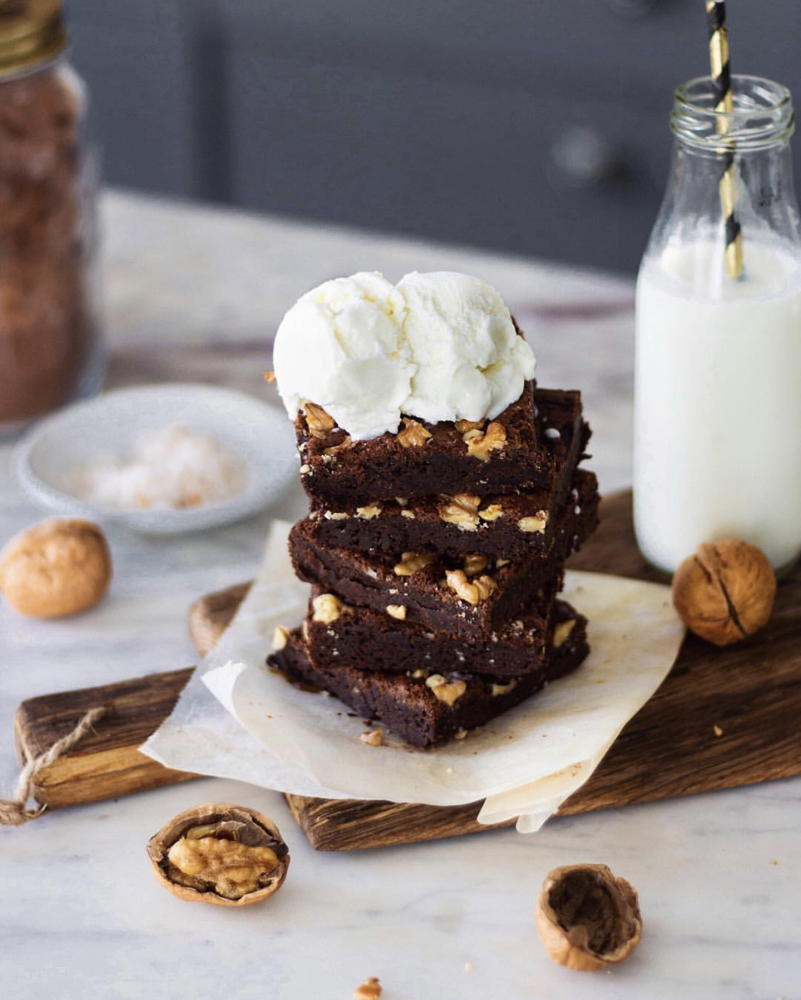

FUDGY CHOCOLATE BROWNIES
Prep Time: 15 minutes
Cook Time: 35 minutes
Total Time: 50 minutes
Ingredients:
- 1 cup ( 175gm) dark chocolate, coarsely chopped
- ½ cup (113gm) butter
- 1 cup (200gm) caster sugar
- ½ cup (60gm) all purpose flour
- 1 tsp (4gm) baking powder
- 3 tbsp ( 23gm) cocoa powder
- 2 eggs or 1 cup (285gm) Greek yogurt
- ½ cup (63gm) crushed walnuts

Instructions:
- Butter an 8" square pan and pre-heat your oven to 180°C.
- In a saucepan set over low heat, melt butter and chocolate. Let it cool.
- Combine sugar and eggs (or Greek yogurt). Add the cooled chocolate mixture.
- Add in the flour, cocoa powder and baking powder. Fold in the walnuts
- Transfer the batter to the baking dish.
- Bake at 180°C for 30-35 minutes. Let the brownies cool completely before you try and cut them.
Source: Bake with Shivesh